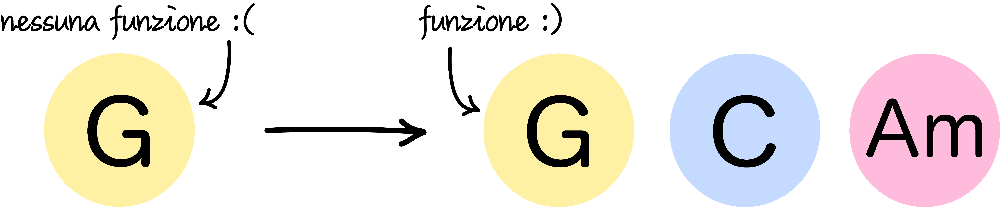
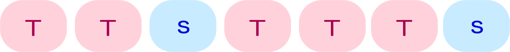
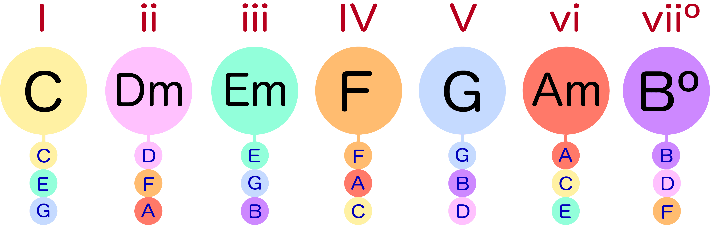
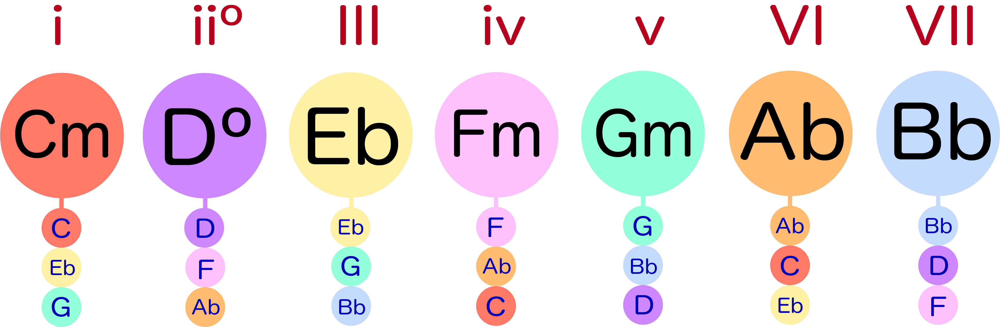
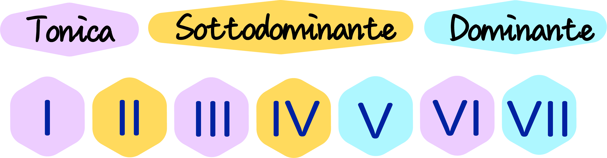

Che cosa si intende per armonia funzionale?
L’armonia funzionale è lo studio delle relazioni che si instaurano fra accordi in successione. Gli accordi assumono funzioni diverse in base al contesto armonico in cui si trovano, ossia, in base al centro tonale della sequenza armonica in cui sono inseriti.
In pratica: se suonassimo un G maggiore isolato, non potremmo definirne la funzione armonica. Per farlo dovremmo prima inserirlo in un contesto armonico, scegliendo di suonare successivamente un C maggiore e poi ancora un A minore, ad esempio.

Con un solo passaggio facciamo due cose:
- Dotiamo G di una funzione armonica perché lo abbiamo inserito in un contesto armonico
- Diamo vita a una sequenza armonica gradevole all’orecchio perché scegliamo degli accordi (G, C e Am) che “suonano bene insieme”
È così che si definisce - perfino inconsapevolmente - il centro tonale di un brano in base al quale gli accordi assumono funzioni specifiche che suscitano una particolare sensazione nell’ascoltatore. È proprio grazie alle regole dell’armonia funzionale che possiamo spiegare perché alcuni accordi “suonano bene” (o male) insieme!
Quindi, se cambia il contesto in cui si trova l’accordo cambia anche la funzione che questo assume. O ancora, un accordo può assumere tante funzioni quanti sono i contesti in cui può trovarsi.
Definire il centro tonale: l’armonizzazione della scala maggiore e minore
Spesso, quando si vuole comporre un brano da zero, si tende a suonare tutti gli accordi che si conosce finché non se ne trovano alcuni che suonino bene fra loro. Solo a quel punto, quando si riesce a trovare quei fatidici 4 accordi, ci si può ritenere più o meno soddisfatti del risultato.
Per quello che abbiamo detto prima, questo può sicuramente essere un modo di definire una sequenza armonica efficace e, dunque, anche se inconsapevolmente, un centro tonale.
Ci si potrebbe fermare qui.
Ma se ti dicessi che è possibile trovare quei 4 accordi in un modo molto più conveniente? Che è possibile conoscere in anticipo gli accordi che funzioneranno sicuramente bene insieme?
Tutto ciò è possibile grazie all’armonizzazione delle scale diatoniche maggiori e minori.
Le scale diatoniche sono scale di 7 suoni che si susseguono secondo una precisa successione di 7 intervalli, cinque toni (T) e due semitoni (s).
Nelle scale diatoniche maggiori la successione è la seguente:

Nelle scale diatoniche minori la successione è la seguente:
A ogni nota della scala viene assegnato un grado denotato da numeri romani.
Applichiamo gli intervalli per ottenere i gradi della scala maggiore di C:
e quelli della scala minore di C:
A questo punto, suonando simultaneamente almeno 3 note di una di queste due scale, otterremo degli accordi a loro volta maggiori o minori, indipendentemente dalla scala di riferimento. È suonando gli accordi in questo modo che possiamo armonizzare una scala.
Armonizzare una scala significa, dunque, costruire un accordo di almeno 3 note (cioè una triade) su ogni grado della scala utilizzando solo le note che fanno parte di quella scala.
La successioni di accordi (maggiori e minori) che verrà fuori sarà la stessa per ogni tonalità. Per questo è possibile individuare due pattern:
- ARMONIZZAZIONE SCALA MAGGIORE: I ii iii IV V vi viiº
- ARMONIZZAZIONE SCALA MINORE: i iiº III iv v VI VII
A ogni grado delle scale possiamo associare un accordo maggiore (indicati da numeri romani in maiuscolo) o un accordo minore (indicati da numeri romani in minuscolo) e una funzione precisa.
Armonizziamo la scala diatonica maggiore di C:

E poi la scala diatonica minore di C:

Quali sono le funzioni degli accordi?
Le tre principali funzioni degli accordi sono:
- La funzione di tonica
- La funzione di sottodominante
- La funzione di dominante
A queste funzioni corrispondono tre sensazioni.
Tonica
L’accordo di tonica evoca una sensazione di stabilità. È il punto da cui partire e a cui tornare.
Gli accordi che appartengono alla famiglia della tonica sono:
- I
- III
- VI
Sottodominante
L’accordo di sottodominante suscita una sensazione di movimento e ha la duplice funzione di allontanarsi dall’accordo di tonica e di predisporre l’orecchio all’accordo di dominante.
Gli accordi che appartengono alla famiglia della sottodominante sono:
- II
- IV
Dominante
L’accordo di dominante evoca grande tensione che provoca nell’ascoltatore il desiderio di risoluzione sulla tonica.
Gli accordi che appartengono alla famiglia della dominante sono:
- V
- VII
Ogni ascoltare, seppur inconsapevolmente, percepisce le sensazioni legate alle funzioni armoniche impiegate in un brano e basa il proprio interesse per il brano stesso sulla soddisfazione (o delusione, a seconda dei casi) dell’aspettativa armonica complessiva.

Cosa sono le progressioni armoniche?
Le progressioni armoniche sono sequenze di funzioni armoniche (ovvero di accordi la cui funzione armonica è ben individuata).
Esistono tantissimi tipi di progressioni armoniche, ma noi ci limiteremo ad approfondire quelle tonali (che rimangono all’interno di una sola tonalità) e diatoniche (in cui gli accordi appartengono alla scala diatonica di riferimento).
Generalmente, nelle progressioni armoniche si tende a partire dall’accordo di tonica e a muoversi verso un accordo di sottodominante, poi di dominante per chiudere infine nuovamente con la tonica. È questa la struttura della progressione più famosa di tutte:
Qui potrai riconoscere le progressioni armoniche più frequenti in famosi brani pop.
Ricorda sempre che le possibilità sono infinite e, sebbene possano essere utili, le regole teoriche non devono mai limitare la creatività di un musicista.
Scopri le progressioni